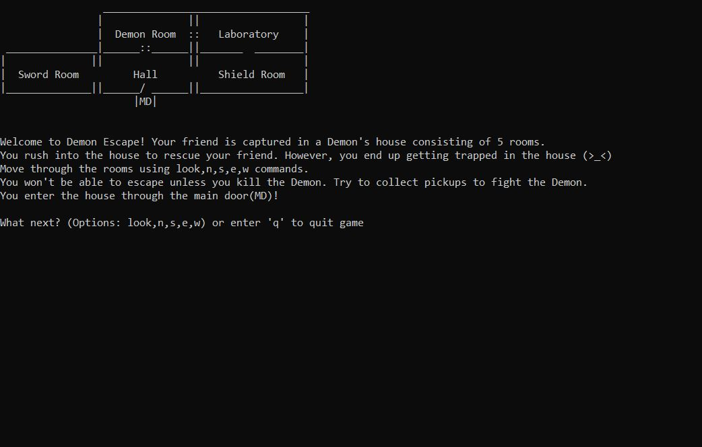

Some points to consider before going over my projects
1) Click the project image for a link to download the gameplay video
2) Click on the buttons to view some files I've uploaded for reference.
3) Most of these projects do not have a quit option as far as their builds
are concerned. Please use 'Alt+Enter' to load up the Menu bar in
order to use the close button. Make sure you enjoy before closing :P
Hatmancers:World Wizarding Finals 20XX
HatMancers is a multiplayer third-person arena shooter game created using the Unity 3D Game Engine.
You take control of a wizard and pick up different hats in order to use magics associated with them.
Currently the game has a Free-For-All game mode with support for 2-4 players.
The goal is to get the maximum number of knockouts before the timer runs out.
This project was a part of one of my graduation courses. My contribution to this project was towards
UI elements, Animation and Level Design. Additionally, the course was more about Game Development processes
and we followed an agile Scrum approach for the same. This also consisted of multiple pitch presentations and playtests by the target audience.
Unity ECS Space
Simulation
ECS Space Simulation is an attempt at implementing the Data-Oriented version of Unity Development.
It consists of a rotating Sun and moving asteroids, implemented using the Entity-Component-System of Unity 3D Game Engine.
This project was a part of one of my graduation courses. Unity is coming up with a Data-Oriented development approach
as an improvement over their traditional Object-Oriented development in terms of performance.
The simulation contained about a 1000 asteroid objects and still provides a 60+ FPS which is really impressive.
Box shooter is a 3D shooter game created using the Unity 3D Game Engine.
The goal of the game is to move around in a restricted space and shoot down boxes to score points before the timer runs out.
Three different colors of boxes get spawned; namely Green(earns points), White(earns time) and Yellow(cuts time).
This is a personal project wherein apart from the usual C# scripting, I was able to explore the Animator
used in the Unity Game Engine to scale and move the boxes as defined.
Roller madness is a 3D game created using the Unity 3D Game Engine.
The goal of the game is to move around as a roller ball and collect the required number of coins in order to clear the level.
However, there will be enemy boxes trying to catch you and touching them results in game over.
This is a personal project wherein apart from the usual C# scripting, I also learnt how to implement UI and transition the game from one level to another.
Pogo Santa is a 2D platformer game created using the Unity 3D Game Engine.
The game consists of jumping on the spawning platforms (that disappear once stepped upon),
collection of gift pickups and a restart upon falling down. The goal is to go your way up and collect gifts to score more points.
This is a personal project and my very first attempt in game development using Unity.
This was a very good experience in terms of learning from different sources and incorporating it in this game.
Solar System Simulation is a simulation created using the Unity 3D Game Engine.
The Simulation consists of a rotating Sun and few planets rotating around it.
This is one of my few initial personal projects in Unity where I learnt using quarternions to rotate objects automatically per frame.
Also, I got the opportunity to implement a multiple cameras, both of which are interactive
i.e. clicking on one planet shifts the main camera focus to that planet.

Bull Cow Game is a text based game developed in C++ using the XCode IDE for MacOS.
The player has to guess a preset 6 letter isogram word in 15 turns.
The number of bulls are the number of letters in the guessed word that are exactly in the same position as the preset word.
The number of cows are the number of letters in the guessed word that are not in the correct position but are present in preset word.
This is a personal project that made me understand some fundamental concepts in OOP using C++.
Note: Please use XCode on MacOS to run the code.

Text Adventure is a text based game developed in C# using the Visual Studio IDE.
The player has to traverse through rooms, collect resources, and move into the final Demon room to win and rescue a friend.
Not collecting enough resources before entering the Demon room results in death.
This project was a part of one of my graduation courses.
It made me understand some fundamental concepts as well as Data-driven approach in OOP using C#.
A world succumbed to darkness.
What if something other than consciousness, controlled our state of mind?
Have you been a part of the wrong side to know if it is really wrong?
In Starry Sky, be the ultimate sword master and bring back daylight, by exterminating the creatures of the dark.
That is.....until you realise you're becoming one yourself!!!
This project was a part of one of my graduation courses and my first attempt at writing a Game Design Document.
My contributions to this design document are in the Gameplay features,
Gameplay progression and the Level design of the first zone in this game. The overall process really helped me realise the kind of questions we need to answer,
right from small details in the game itself to how a player playing the game would reciprocate.
More projects incoming...
- Learning to develop a third-person action game using Unreal Engine 4
- Working on an Infinite runner game in space environment using Unreal Engine 4